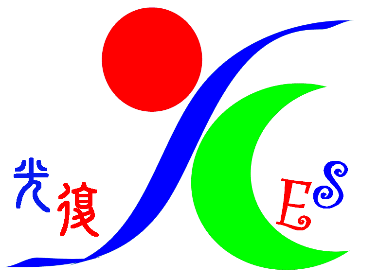

歡迎使用小光秘書

新北市中和區光復國民小學
光復情 • 人文心 • 勤學習 • 能力行
本月家長請假服務
86新生報到指南下載
142AI 諮詢解答次數
3,250重要提醒 & 親師布告欄
請假信設定
請假信預覽
在左側輸入孩子請假資訊，生成的請假通知將會在此處呈現。
入學與報到指南
歡迎即將成為光復大家庭一份子的家長與寶貝們！請點選您想查詢的指南類別，小光將會提供最新且最完整的文件與日程清單喔。
指南內容預覽
請在左側選擇入學或轉學類別，辦理說明與攜帶清單將在此呈現。
小光為家長彙整了本校最常使用的數位與親師互動平台傳送門，您可以點選連結直接開啟，快速查詢孩子的在校日常與行政公告喔！
新北市親師生平台
新北市教育局專為家長與學生設計的整合式服務。家長登入後，可快速檢視孩子的聯絡簿通知、請假狀況與班級日常，亦可開啟多樣化數位學習資源。
校務行政系統 (ESA)
提供家長查詢孩子在校的學期出缺席統計、獎懲紀錄、多元評量與期末成績。以家長帳號登入系統，能深入了解孩子的學術成長路徑與歷史紀錄。
光復附幼 Google 專網
光復國小附設幼兒園專網。園所最新公告、招生日程、教學主體計畫、作息安排，以及孩子們精采的校園生活照片寫真，皆在專頁中呈現。
學校學期行事曆
方便家長隨時查閱或下載光復國小 114 學年度最新學期行事曆 PDF，掌握學校考試日期、寒暑假安排、休假、返校日及各處室重要活動日程。
午餐與環境衛生專區
隨時關注學童的飲食健康！此專區提供每月午餐菜單下載、每日菜色實體照公佈、食材產地標示與食安檢驗合格證書，落實讓孩子吃得安心。